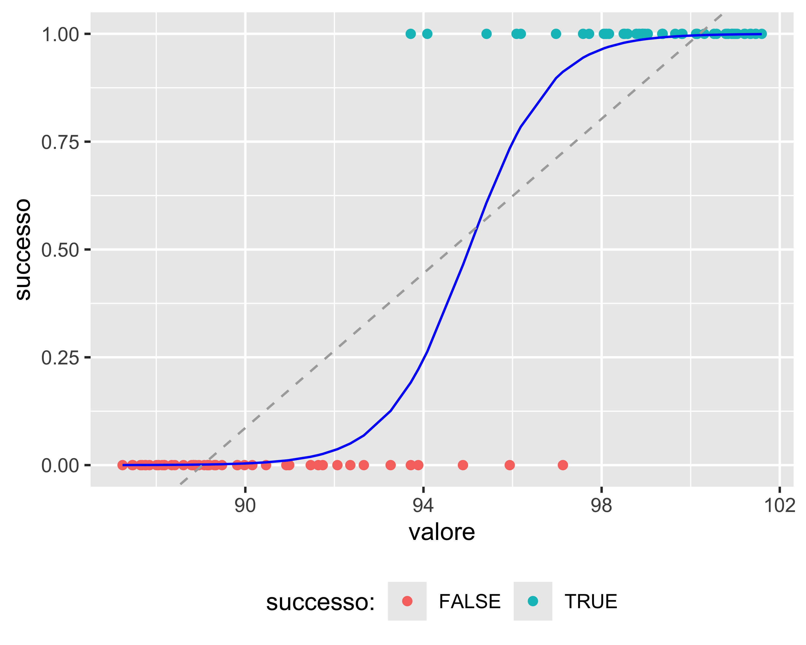

Regressione
Analisi Dati e Statistica, 2025–26

Paolo Bosetti
Università di Trento, Dipartimento di Ingegneria Industriale
Ultimo aggiornamento: 29/09/2025
Regressione
\(\renewcommand{\hat}[1]{\widehat{#1}}\) \(\renewcommand{\tilde}[1]{\widetilde{#1}}\) \(\renewcommand{\theta}{\vartheta}\)
Ogni modello di un sistema o processo fisico dipende da parametri. Questi parametri devono essere calcolati adattando il modello alle osservazioni sperimentali (misure)
L’operazione di adattamento (fit) di un modello è effettuata mediante regressione
Basi
Un modello di un sistema fisico può essere espresso come: \[ y=f(x_1, x_2, \dots, x_n, c_1, c_2, \dots, c_m) \] dove \(x_i\) sono le variabili (aleatorie) fisiche, dette regressori o predittori, mentre le \(c_i\) sono i parametri (costanti) del modello
Se \(n=1\) c’è un unico predittore e il modello si dice semplice
Ad esempio, \(y=a+bx+cx^2\) è un modello semplice con parametri \(a,~b,~c\)
regredire il modello significa effettuare delle misurazioni di \(y\) per diversi valori di \(x\) e determinare i valori dei parametri \(a,~b,~c\) che minimizzano la distanza tra il modello e le osservazioni sperimentali
Tipi di regressione
Prenderemo in considerazione tre tipi di regressione:
- Regressione lineare: il modello è una combinazione lineare dei parametri
- Regressione lineare generalizzata
- Regressione ai minimi quadrati: i parametri sono combinati in modo non lineare
Regressione Lineare
Valida per ogni modello lineare nei parametri (mentre i predittori possono comparire con grado diverso da 1)
Basi
Definizioni
Si definisce il modello statistico del processo da regredire come segue: \[ y_i=f(x_{1i}, x_{2i}, \dots, x_{ni}, c_1, c_2, \dots, c_{n+1}) + \varepsilon_i=\hat{y_i} + \varepsilon_i,~i=1,2,\dots,N \]
dove \(i\) è l’indice di osservazione (\(N\geq n+1\) in totale), \(\hat{y_i}\) è il valore regredito, o predizione, in corrispondenza dell’osservazione \(i\), e \(\varepsilon_i\) sono i residui
- Il valore regredito corrisponde alla componente deterministica
- Il residuo è la componente aleatoria
- Si assume l’ipotesi di normalità dei residui, cioè che \(\varepsilon_i \sim\mathcal{N}(0, \sigma^2)\)
Se la \(f(\cdot)\) è una funzione analitica e lineare nei coefficienti, allora possiamo esprimerla come \(\mathbf{A}\mathbf{k}=\mathbf{y}\), dove
- \(\mathbf{y}\) è il vettore delle \(y_i,~i=1\dots N\)
- \(\mathbf{k}\) è il vettore dei parametri \(c_j,~j=1\dots n+1\)
- \(\mathbf{A}\) una matrice \(N\times (n+1)\) così composta:
\[ \mathbf A = \begin{bmatrix} x_1^{n-1} & x_1^{n-2} & \dots & x_1 & 1 \\ x_2^{n-1} & x_2^{n-2} & \dots & x_2 & 1 \\ \vdots & \vdots & \vdots & \vdots & \vdots \\ x_N^{n-1} & x_N^{n-2} & \dots & x_N & 1 \\ \end{bmatrix} \]
Basi
L’equazione lineare può essere risolta con il metodo della pseudo-inversa: \[ \begin{align} \mathbf A^T \mathbf A\cdot \mathbf{k} &= \mathbf A^T \cdot \mathbf{y} \\ (\mathbf A^T \mathbf A)^{-1} \mathbf A^T \mathbf A\cdot \mathbf{k} &= (\mathbf A^T \mathbf A)^{-1} \mathbf A^T \cdot \mathbf{y} \\ \mathbf{k} &= (\mathbf A^T \mathbf A)^{-1} \mathbf A^T \cdot \mathbf{y} \end{align} \] Questa relazione rende evidente cosa si intende per regressione lineare: non ha nulla a che fare con il grado della funzione regredita, ma solo con l’equazione lineare nei parametri che rappresenta il modello
NOTE:
- dalla equazione matriciale precedente è evidente che la regressione può essere eseguita se e solo se \(N\geq n+1\), cioè se il numero di osservazioni è almeno pari al numero di parametri
- anche nel caso di una \(f(\cdot)\) con più predittori, se essa è lineare nei coefficienti è sempre possibile esprimerla come \(\mathbf{A}\mathbf{k}=\mathbf{y}\) e quindi risolverla con il metodo della pseudo-inversa
Esempio
Sia il modello da regredire del tipo \(y_i=(ax_i + b) + \varepsilon_i\); allora può essere rappresentato come:
\[ \begin{bmatrix} x_1 & 1 \\ x_2 & 1 \\ \vdots & \vdots \\ x_N & 1 \\ \end{bmatrix} \cdot \begin{bmatrix} a \\ b \end{bmatrix} = \begin{bmatrix} y_1 \\ y_2 \\ \vdots \\ y_N \end{bmatrix} \]
La figura mostra le osservazioni come punti di coordinate \((x_i, y_i)\), il modello regredito come una retta rossa (modello lineare nei coefficienti \(a,~b\) e di primo grado del predittore \(x\)) e i residui \(\varepsilon_i\) come segmenti blu che rappresentano la differenza tra le \(y_i\) e il corrispondente valore regredito \(\hat{y_i}\)
Regressione ai Minimi Quadrati
Se il modello non è lineare nei parametri, è comunque possibile effettuarne la regressione con il metodo dei minimi quadrati
Regressione ai Minimi Quadrati
Si cerca cioè l’insieme di valori dei parametri che minimizza la distanza tra il modello e le osservazioni. Questa minimizzazione può essere realizzata definendo un indice di merito che rappresenta la distanza tra modello e osservazioni in funzione dei parametri: \[
\Phi(c_1, c_2,\dots,c_m)=\sum_{i=1}^N \left(y_i - f(x_{1i},x_{2i},\dots,x_{ni}, c_1, c_2,\dots,c_m) \right)^2
\]
Se la \(f(\cdot)\) è analitica e differenziabile, allora possiamo minimizzare \(\Phi(\cdot)\) per derivazione, cioè risolvendo il sistema di \(m\) equazioni \[ \frac{\partial\Phi}{\partial c_i}(c_1,c_2,\dots,c_m) = 0 \]
Se la \(f(\cdot)\) non è differenziabile, il minimo di \(\Phi(\cdot)\) può comunque essere calcolato per via numerica (ad es. metodo di Newton-Raphson)
Qualità della regressione
Ad un dato insieme di osservazioni è possibile adattare un numero infinito di modelli
È possibile definire alcuni parametri di merito e alcuni metodi di verifica che consentono di valutare la qualità di una regressione e, quindi, individuare il modello che meglio si adatta alle osservazioni
Coefficiente di Determinazione
Il coefficiente di merito più utilizzato per valutare una regressione è il coefficiente di determinazione \(R^2\)
È definito come \(R^2 = 1 - \frac{SS_\mathrm{res}}{SS_\mathrm{tot}}\), dove \(SS_\mathrm{res} = \sum \varepsilon_i^2\) e \(SS_\mathrm{tot} = \sum(y_i - \bar y)^2\)
Se i valori regrediti corrispondono ai valori osservati \(y_i=\hat{y_i}\), allora i residui sono tutti nulli e vale \(R^2 = 1\)
La qualità della regressione diminuisce al diminuire di \(R^2\)
Sotto-adattamento
Si ha sotto-adattamento (o under-fitting) quando il modello ha un grado inferiore all’apparente comportamento delle osservazioni
Può essere evidenziato, oltre che da un \(R^2\) basso, studiando la distribuzione dei residui: se c’è sotto-adattamento i residui possono essere non-normali e, soprattutto, mostrare degli andamenti, o pattern
Un pattern è un andamento regolare dei residui in funzione dei regressori
Dal numero di massimi e minimi presenti nell’eventuale pattern è possibile stimare quanti gradi mancano
Sovra-adattamento
Se il grado del modello è eccessivo, il modello tende a inseguire i singoli punti
Il valore di \(R^2\) cresce, raggiungendo 1 quando il grado è uguale al numero di osservazioni meno 1
Tuttavia il modello perde di generalità e non riesce più a predirre correttamente nuovi valori acquisiti in un secondo momento (le crocette rosse in figura)
Il sovra-adattamento ha effetti particolarmente drammatici in caso di estrapolazione, cioè quando si valuta il modello al di fuori dell’intervallo in cui è stato regredito
Bande di Predizione
È una banda simmetrica rispetto alla regressione all’interno della quale le osservazioni (presenti e future) hanno una probabilità assegnata di ricadere
In generale, per un numero di osservazioni sufficientemente grande (\(>50\)) la banda di predizione al 95% contiene il 95% delle osservazioni
Bande di Confidenza
È una banda simmetrica rispetto alla regressione all’interno della quale il valore atteso del modello ha una probabilità assegnata di ricadere
È sempre più stretta rispetto alla banda di predizione
È l’equivalente multi-dimensionale dell’intervallo di confidenza per un T-test: come questo è l’intervallo all’interno del quale ha una assegnata probabilità di rientrare il valore corrispondente all’ipotesi nulla, qui possiamo assumere che il modello “vero” rientri con una certa probabilità nella banda di confidenza
È ottenuto calcolando gli intervalli di confidenza sui parametri della regressione, calcolando poi—per ogni valore del predittore—il valore massimo e minimo della regressione corrispondente ai valori estremi dei parametri nei loro intervalli di confidenza
Regressione Lineare Generalizzata
La regressione lineare classica assume l’ipotesi di normalità dei residui
Quando quest’ipotesi non è vera, ma il modello è comunque lineare nei parametri, si può utilizzare la regressione lineare generalizzata
Basi
Nel caso della regressione lineare: \[ \begin{align} y_i &= f(\mathbf{x}_i, \mathbf{k}) + \varepsilon_i = \hat y_i + \varepsilon_i \\ \varepsilon_i &\sim \mathcal{N}(0, \sigma^2) \end{align} \] Nel caso della regressione lineare generalizzata:
\[ \begin{align} y_i &= \hat y_i + \varepsilon_i \\ \varepsilon_i &\sim D(p_1,p_2,\dots,p_k) \end{align} \] dove \(D\) è una generica distribuzione a \(k\) parametri facente parte della famiglia delle distribuzioni esponenziali (normale, binomiale, gamma, normale inversa, Poisson, quasinormale, quasibinomiale e quasipoissoniana)
Il problema può essere risolto con l’introduzione di una funzione di collegamento che riscala i residui proiettandoli su una ditribuzione normale
Basi
La funzione di collegamento (link function) \(g(\cdot)\) è tale per cui:
\[ \begin{align} y_i &= \hat y_i + g(\varepsilon_i) \\ \varepsilon_i &\sim D(p_1,p_2,\dots,p_k);~g(\varepsilon_i)\sim \mathcal{N}(0, \sigma^2) \end{align} \]
Le funzioni di collegamento per le distribuzioni più comuni sono:
| Distribuzione | Funzione di collegamento |
|---|---|
| Normale | \(g(x)=x\) |
| Binomiale | \(g(x)=\mathrm{logit}(x)\) |
| Poisson | \(g(x)=\log(x)\) |
| Gamma | \(g(x)=1/x\) |
In particolare, vale: \(\mathrm{logit}(x)=\frac{1}{1+e^{-p(x-x_0)}}\)
Regressione Logistica
Il caso tipico di regressione logistica è il classificatore di eventi binomiali
consideriamo un processo che, in funzione di uno o più predittori, possa fornire un risultato che può valere solo una di due alternative (successo|fallimento, rotto|integro, vero|falso, 1|0). Vogliamo identificare la soglia dei predittori che commuta il risultato
Una regressione lineare non è adatta alla situazione: è evidente che i residui non sono normali e che la pendenza della regressione dipende molto da quanti punti sono raccolti nelle zone “sicure”
Regressione Logistica
La funzione logistica regredita fornisce il parametro \(x_0\) che identifica il valore che separa una uguale quantità di falsi positivi e falsi negativi
Inoltre, è possibile individuare la soglia opportuna per ottenere una prefissata probabilità di falsi positivi (o falsi negativi)
Questo è il tipo più semplice di machine learning: un classificatore binomiale

Presentazione dei dati
Il concetto di banda di confidenza è essenziale nella presentazione grafica di dati provenienti da più serie
Confronto grafico di serie
Supponiamo di avere un processo il cui valore dipende da una variabile \(x\)
Supponiamo che un parametro \(S\) di processo possa influire sul valore in uscita. Ad esempio:
- il valore è la durezza di un metallo, \(x\) è la temperatura, il parametro \(S\) è la quantità di un elemento in lega
- il valore è la produttività di un impianto, \(x\) è un parametro quantitativo di processo, il parametro \(S\) è il tipo di macchina utilizzato
Supponiamo di ripetere 8 volte una misurazione del valore in uscita per le varie combinazioni di \(x\) e di \(S\), ottenendo i risultati in figura: quali differenze sono significative?
Senza un modello di riferimento
Senza un modello di riferimento che esprima \(v=f(x, S)\) non ha senso effettuare una regressione
Tuttavia posso riportare, per ogni trattamento
- il valor medio, unendo le serie con una spezzata al solo scopo di raggruppare visivamente i dati
- i limiti dell’intervallo di confidenza per ogni serie e per ogni trattamento
- oppure, unire i limiti con una banda che rappresenta la confidenza sulla media
Zone in cui le bande sono sovrapposte sono statisticamente indistinguibili
Con un modello
Solo se ho un modello \(v=f(x, S)\) posso effettuare una regressione
Anche in questo caso, la regressione va accompagnata con bande di confidenza
Di nuovo, zone in cui le bande sono sovrapposte sono statisticamente indistinguibili

paolo.bosetti@unitn.it — https://paolobosetti.quarto.pub/slides/ADAS/